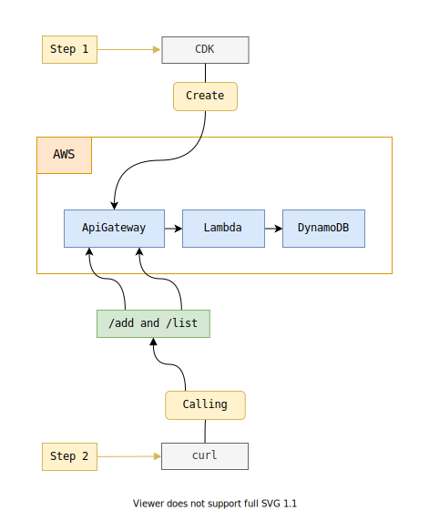
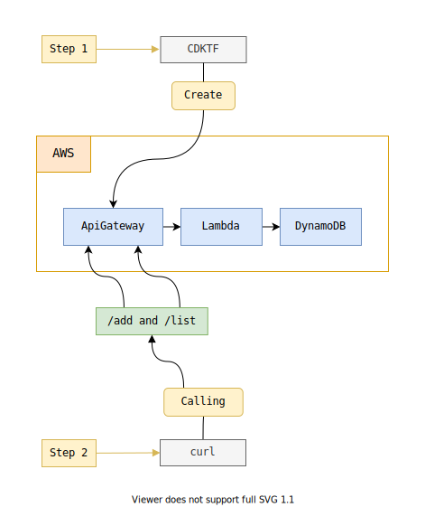

CDK + CDKTF + Lambda + DynamoDB
- Create an API Gateway, a Lambda and a DynamoDB Table via CDK
- Use curl to add item and list items
- Create the same test application using CDKTF to compare

Install and setup the CDK project
Get the code from this github repository :
# download the code
$ git clone \
--depth 1 \
https://github.com/jeromedecoster/cdk-lambda-dynamodb.git \
/tmp/cdk
# cd
$ cd /tmp/cdk
To setup the project, run the following command :
# install
$ make setup
This command will :
- Install globally aws-cdk
- Install globally download-size
- Initialize a cdk typescript
- Copy the project files from the templates
- Bootstrap cdk on CloudFormation
To initialize a cdk project we execute this command in an empty folder :
# possible values [csharp|fsharp|go|java|javascript|python|typescript]
$ cdk init app --language typescript
Just after installing the basic files necessary to start a project, we can see the disproportionate weight of an empty project : 236 Mo
# 236M .
$ du --summarize --human-readable
The number of files is also colossal :
# 14353
$ find . -type f | wc -l
To complete our project we need to install 3 npm packages. This still adds weight and a significant number of files :
# @aws-cdk/aws-lambda@1.132.0: 3.66 MiB
$ npm install @aws-cdk/aws-lambda
# @aws-cdk/aws-apigateway@1.132.0: 5.14 MiB
$ npm install @aws-cdk/aws-apigateway
# @aws-cdk/aws-dynamodb@1.132.0: 4.08 MiB
$ npm install @aws-cdk/aws-dynamodb
In the end, we have a very simple project which takes on totally disproportionate proportions :
# project stats
$ make stats
# 270M crazy size !
# 15286 crazy files count !
File exploration and infrastructure deployment
The huge benefit of CDK is that it removes the incredible complexity and illegibility of CloudFormation templates by using easy-to-read code.
The best example is the creation of the API Gateway via the RestApi class.
An excerpt from the file apigateway-stack.ts :
import * as cdk from '@aws-cdk/core'
import * as apigw from '@aws-cdk/aws-apigateway'
export class ApiGatewayStack extends cdk.Stack {
public readonly api: apigw.LambdaRestApi
constructor(scope: cdk.Construct, id: string, props: apigw.LambdaRestApiProps) {
super(scope, id, props)
// LambdaRestApiProps : https://docs.aws.amazon.com/cdk/api/latest/python/aws_cdk.aws_apigateway/LambdaRestApiProps.html
var apiProps: apigw.LambdaRestApiProps = {
handler: props.handler,
restApiName: process.env.PROJECT_NAME,
defaultCorsPreflightOptions: {
allowOrigins: ['*'],
allowCredentials: true,
},
endpointTypes: [apigw.EndpointType.REGIONAL],
}
this.api = new apigw.LambdaRestApi(this, 'ApiGateway', apiProps)
// ...
}
}
We deploy the project with ease :
# destroy all resources
$ make deploy
This command runs this script :
$ cdk deploy --all --require-approval never --outputs-file cdk-outputs.json
# 234 seconds (creation)
# 23 seconds (no modification, just after creation)
Creating the resources takes more than 3 minutes.
Executing a new deployment without any modification takes quite a long time : approximately 20 seconds.
We can test the application with these 2 commands :
# add item (execute several times)
$ make curl-add
# list items
$ make curl-list
Update the Lambda function
We’ll update the Lambda function and see how long it takes to update the infrastructure.
Here is an overview of the Lambda function :
exports.handler = async (event) => {
// return buildResponse(200, event)
var response
if (event.httpMethod == 'GET' && event.path == '/') {
response = list()
} else if (event.httpMethod == 'POST' && event.path == '/add') {
response = add(JSON.parse(event.body).value)
} else {
response = buildResponse(200, 'nothing')
}
return response
}
Our modification is simple : we uncomment the first line.
exports.handler = async (event) => {
return buildResponse(200, event)
We save our changes and deploy our application again :
# 53 seconds (update lambda, uncomment `return buildResponse(200, event)`)
$ make deploy
It takes almost 1 minute to update our Lambda
If we comment and deploy again, this time I have a little over 1 minute :
# 67 seconds (update lambda, comment `return buildResponse(200, event)`)
$ make deploy
The demonstration is over. We can delete our resources with this command :
# destroy all resources
$ make destroy
Install and setup the CDKTF project

Get the code from this github repository :
# download the code
$ git clone \
--depth 1 \
https://github.com/jeromedecoster/cdktf-lambda-dynamodb.git \
/tmp/cdktf
# cd
$ cd /tmp/cdktf
To setup the project, run the following command :
# install
$ make setup
This command will :
- Install globally cdktf-cli
- Install globally download-size
- Initialize a cdktf typescript
- Copy the project files from the templates
To initialize a CDKTF project we execute this command in an empty folder :
# possible values [csharp|go|java|python|python-pip|typescript]
$ cdktf init --template=typescript --local \
--project-name cdktf-lambda-dynamodb \
--project-description cdktf-lambda-dynamodb
Just after installing the basic files necessary to start a project, we can see the disproportionate weight of an empty project : 114 Mo
# 114M .
$ du --summarize --human-readable
The number of files is also colossal :
# 6809
$ find . -type f | wc -l
To complete our project we need to install 1 npm package. This still adds weight and a significant number of files :
# @cdktf/provider-aws@2.0.13: 9.16 MiB
$ npm install @cdktf/provider-aws
In the end, we have a very simple project which takes on totally disproportionate proportions :
# project stats
$ make stats
# 280M crazy size !
# 7092 crazy files count !
File exploration and deployment
The code you write using CDKTF is not as concise as with CDK. This is especially true when you need to define the API Gateway instance.
An excerpt from the apigateway-stack.ts file :
import { Construct } from 'constructs'
import { TerraformOutput } from 'cdktf'
import { APIGateway, LambdaFunction } from '@cdktf/provider-aws'
interface ApiGatewayProps {
lambda: LambdaFunction.LambdaFunction
}
export class ApiGatewayStack extends Construct {
public readonly api: APIGateway.ApiGatewayRestApi
constructor(scope: Construct, name: string, props: ApiGatewayProps) {
super(scope, name)
this.api = new APIGateway.ApiGatewayRestApi(this, 'ApiGateway', {
name: String(process.env.PROJECT_NAME),
endpointConfiguration: {
types: ['REGIONAL']
}
})
// path: /{proxy+}
const proxy = new APIGateway.ApiGatewayResource(this, `${process.env.PROJECT_NAME}-proxy`, {
restApiId: this.api.id,
parentId: this.api.rootResourceId,
pathPart: '{proxy+}',
})
const proxyMethod = new APIGateway.ApiGatewayMethod(this, `${process.env.PROJECT_NAME}-proxy-method`, {
restApiId: this.api.id,
resourceId: proxy.id,
authorization: 'NONE',
httpMethod: 'ANY'
})
const proxyIntegration = new APIGateway.ApiGatewayIntegration(this, `${process.env.PROJECT_NAME}-proxy-integration`, {
httpMethod: proxyMethod.httpMethod,
resourceId: proxy.id,
restApiId: this.api.id,
type: 'AWS_PROXY',
integrationHttpMethod: 'POST',
uri: props.lambda.invokeArn
})
// path: /
const root = new APIGateway.ApiGatewayMethod(this, `${process.env.PROJECT_NAME}-root-method`, {
restApiId: this.api.id,
resourceId: this.api.rootResourceId,
authorization: 'NONE',
httpMethod: 'ANY'
})
const rootIntegration = new APIGateway.ApiGatewayIntegration(this, `${process.env.PROJECT_NAME}-root-integration`, {
restApiId: this.api.id,
resourceId: root.resourceId,
httpMethod: root.httpMethod,
type: 'AWS_PROXY',
integrationHttpMethod: 'POST',
uri: props.lambda.invokeArn
})
const deployment = new APIGateway.ApiGatewayDeployment(this, `${process.env.PROJECT_NAME}-deployment`, {
restApiId: this.api.id,
dependsOn: [
proxyIntegration,
rootIntegration
],
stageName: 'prod',
})
// ...
}
}
With CDK we use LambdaRestApi which is a helper and 33 lines are enough to define our API Gateway.
With CDKTF we need 87 lines and their writing is particularly laborious !
We deploy the project with ease :
# destroy all resources
$ make deploy
This command runs this script :
$ cdktf deploy --auto-approve
# 107 seconds (creation)
# 66 seconds (no modification, just after creation)
Creating the resources takes a little less than 2 minutes.
Executing a new deployment without any modification takes quite a long time : approximately 1 minute.
We can test the application with these 2 commands :
# add item (execute several times)
$ make curl-add
# list items
$ make curl-list
Updating the Lambda
As before, we comment and uncomment the first line of our Lambda function :
exports.handler = async (event) => {
// return buildResponse(200, event)
var response
if (event.httpMethod == 'GET' && event.path == '/list') {
response = list()
} else if (event.httpMethod == 'POST' && event.path == '/add') {
response = add(JSON.parse(event.body).value)
} else {
response = buildResponse(200, 'nothing')
}
return response
}
We get a first time :
# 60 seconds (update lambda, uncomment `return buildResponse(200, event)`)
$ make deploy
And we get a second time :
# 46 seconds (update lambda, comment `return buildResponse(200, event)`)
$ make deploy
The demonstration is over. We can delete our resources with this command :
# destroy all resources
$ make destroy
Conclusion
CDKis a huge advantage over CloudFormation templates. The writing is extremely simplified.CDKhas a big drawback : the weight and the number of astronomical files necessary for its use.CDKTFdoes not provide any particular comfort if you already like to write HCL templates that are already simple and elegant.CDKTFis also not exemplary on the weight and the number of files necessary for its use.